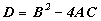
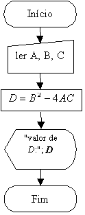

RESPOSTA DO EXERCÍCIO 1
Entradas:
Valores de A, B e C.
Processamentos:
Calcular:

Saída:
Valor de D.
Fluxograma:

Observação:
Veja que no símbolo de saída existe um D dentro das aspas, isto significa que a letra "D" será mostrada na mensagem; enquanto que, o D fora das aspas é o resultado do cálculo da expressão.
Voltar